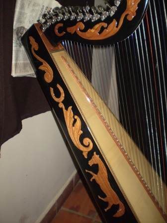
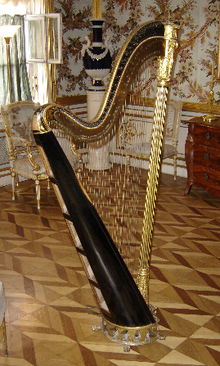
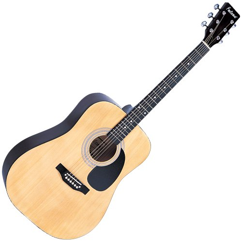
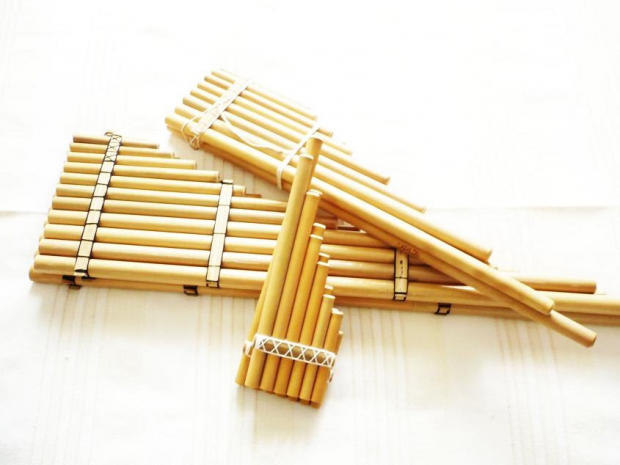

los arpas mas modernos 2017
¿Cual es la mejor arpa para usted? Leer mas
BIENVENIDO AL MUNDO DE LA MUSICA
Los orígenes del arpa se pierden en la noche de los tiempos y sólo es posible reconstruir parte de su historia en el mundo antiguo a raíz de descubrimientos arqueológicos puntuales que van ilustrando su historia.
lo ultimos modelos de arpa 2017
la mejor arpa con cabezal de mujer
arpa peruana
la musica es la mejor medicina para el alma de una persona segun los ultimos estudios hechos por los grandes cientificos, la musica es la unica medicina natural que cura todo tipo de enfermedades por que es el mejor relante y despeja la memoria . Los cientificos a este estudio lo llamaron el musicoterapia este poder de la música se utiliza en la consecución de objetivos terapéuticos, manteniendo, mejorando y restaurando el funcionamiento físico, cognitivo, emocional y social de las personas.

Arpa ayauchana

Arpa paraguaya

guitarra Ayacuchana
